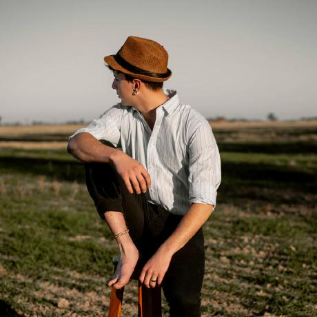
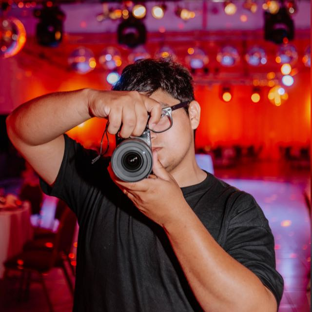

Nuestro Método & Equipo de Trabajo
Unificamos la captura fotográfica y cinematográfica bajo una misma mirada estética. Te contamos cómo trabajamos antes, durante y después de tu evento.
Un enfoque integrado para
tu fotografía y tu video
Unificar tus fotos y tu video bajo una misma dirección garantiza coherencia estética en los tonos, espontaneidad en las expresiones y tranquilidad total para disfrutar tu fiesta sin interrupciones.
No forzamos situaciones ni imponemos poses acartonadas. Acompañamos el ritmo orgánico de la celebración para retratar emociones reales tal como sucedieron.
Fotografía espontánea
Capturamos emociones genuinas, risas espontáneas y los detalles que hacen único tu evento, sin poses forzadas.
Cine y filmación 4K
Movimientos orgánicos, gradación de color cinematográfico y mezcla de audio ambiental envolvente.

"Sincronizamos la mirada fotográfica y cinematográfica para contar historias auténticas."
Los Profesionales
Nuestro equipo técnico especializado para coordinar cada detalle de tu cobertura.

Luca Monteserin
Director Audiovisual & PH
Líder del equipo, encargado de la dirección de arte, captura principal y concepto estético general.

Juan Bonazza
Filmmaker Principal
Especialista en captura cinematográfica, rodaje 4K y dinámicas de iluminación en eventos.

Nico Acosta
Fotógrafo / Cobertura
Especialista en momentos espontáneos, expresiones e interacciones clave durante la fiesta.

Vero Benegas
Fotógrafa de Cobertura
Encargada de retratar emociones, detalles de decoración y secuencias de baile en pista.
Color Signature
Deslizá la barra central o usá las flechas del teclado para comparar el archivo crudo original con nuestra edición de tonos atemporales.
 Original / RAW
Color Signature
Original / RAW
Color Signature